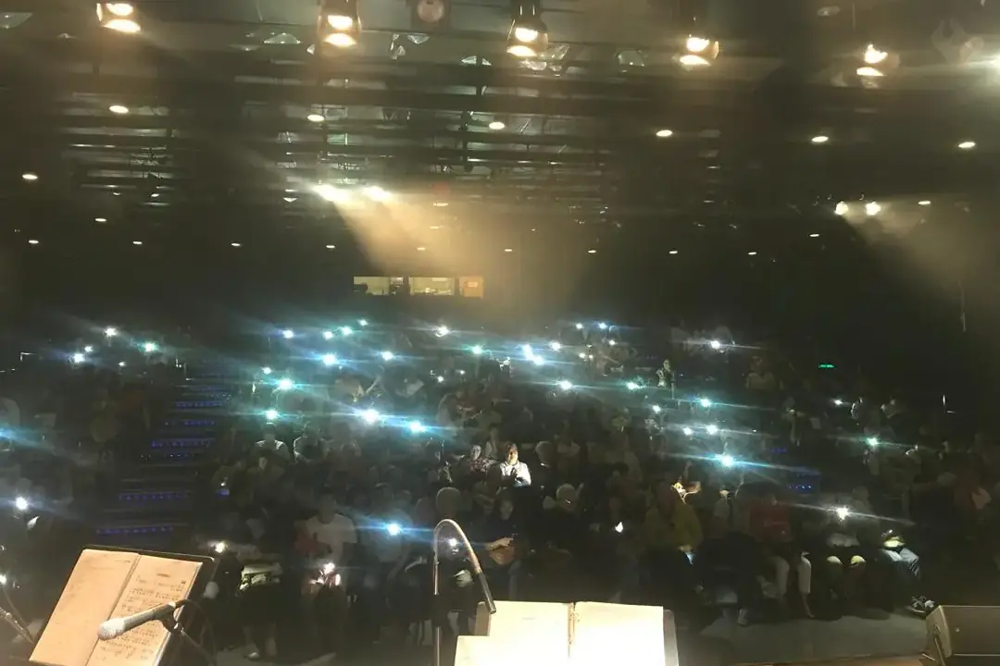

想聽懂一首曲，可以聽三遍，每遍一個任務：第一遍感受整體，第二遍追蹤旋律與段落，第三遍只留意一個演奏細節。每次少聽一點，反而可能記得更清楚。

收藏夾裏有很多演奏影片，真正記得的聲音卻不多。反覆播放未必就聽得深入，耳朵需要有事可做。
同一首曲，每遍聽不同的事
第一遍不必急着分析。記下最吸引你的片段和大概的氣氛，用自己的語言便可以，時代、曲式、專業名詞都可以遲些再說。
第二遍找回熟悉的地方。某段旋律再次出現時有甚麼不同？音高、樂器、力度或伴奏的改變，都是線索。有樂譜可以作簡單標記，沒有譜就用時間位置記錄。
第三遍只追一項，例如長笛怎樣收尾、鋼琴怎樣承接，或者鼓聲怎樣保持拍子。選擇越明確，越不易被其他聲音拉走。
聽完留一句話，寫下真正察覺的事：「第二次主題較輕」「換氣後旋律仍向前」。只寫「很有感情」，就很難回到聲音證據。
這個方法不是每首曲都要用。享受音樂不必變成作業，特別想理解一段演奏時，才把燈移近一點。
兩個版本都好聽，差別在哪裏？
比較版本，是學習描述選擇怎樣影響音樂，不必急着選出最好的一個。取相同的一小段，速度、音色與分句的差異才聽得見。
播放音量盡量相近，否則較響的版本自然顯得更有力量。錄音年代、場地與製作方式也會影響聽感，不能把所有差異都歸於演奏技巧。
一次比較一件事。先聽速度與句子長度，再聽音頭、強弱或換氣。同時評所有細節，往往只剩下「我較喜歡這個」。喜好很重要，說得出原因，學到的更多。
可以寫兩句觀察，例如「甲版句尾收得短」「乙版在高點前留較多空間」。描述不必帶批判，也不用猜測演奏者心裏想甚麼。
聽完選一個想嘗試的處理，放在合適程度的短句上實驗。超出自己氣息或技巧的長句不要直接模仿，先保留音樂意思，再與老師討論可行做法。
比較過後仍然兩個都喜歡，也不矛盾。有些選擇取決於作品理解與整體安排，未必只有一個答案。
伴奏在做甚麼？
耳朵很自然追着主旋律走。下一次暫時只聽伴奏：它維持拍子、提供和聲，還是用另一句旋律回應？背景清楚了，就較明白主旋律為甚麼在某個位置有推動力，或突然需要安靜。
先選織體較簡單的音樂，不要一開始就追很多聲部。能穩定聽見一條低音線，已經是很好的練習。
伴奏常有反覆音型或節奏，重複之中仍有變化。音高、力度或密度何時改變，可能正在提示段落轉折。有樂譜可以先看伴奏一行再聽錄音；沒有譜，就用手輕拍它的節奏，感覺它怎樣支持旋律，不要只把主旋律拍一遍。
回到自己的演奏，找一處要由伴奏帶路的地方，例如前奏、長休止或換段，把那個聲音記成路標，入口就不只靠默數。也留意伴奏需要說話時，自己是否仍吹得太滿。除了讓路，還要知道何時接手、何時回應。
換了樂器，為甚麼像換了表情？
同一旋律用長笛、竹笛或鋼琴演奏，音符相近，感覺卻可能很不同。樂器的起音、延音、音色與收束都會影響句子的形狀。聽同一短段時，要分辨改變來自聲音，還是演奏者的速度與處理。
敲擊或鍵盤樂器的音常在起點後逐步衰減，吹管則可在持續送氣中調整線條。這些基本反應影響長音與分句，不能要求所有樂器用同一方式複製彼此。
也不要把每件樂器固定成一種情緒。長笛可以明亮，也可以柔和；竹笛可以有穿透力，也能細緻。具體音區、奏法與作品，比單一形容詞有說服力。
再聽旋律換到不同音區後的變化。音域安排適合，樂器較易表現自己的質感；只為照搬原調而勉強，可能失去自然語氣。
把欣賞變成演奏問題：你想保留的是旋律的方向、節奏，還是某種音色印象？向另一件樂器借靈感，可以由句子開始，不必模仿它所有發聲細節。合奏時更要承認差異，讓各自擅長的聲音出現在合適位置。
一張便條勝過一百段影片
聆聽便條不用長篇分析，只要三樣：
- 來源：作品、演奏版本和可重訪的連結。同一首作品可能有不同編制和改編。
- 觀察：一件確實聽見的事。「很寧靜」可再加一句「句尾留得長，伴奏音很少」。
- 疑問：例如「為甚麼第二段突然較快？」留待上課、讀節目冊或再聽其他版本時追問。
每次只標記最想重聽的位置，不必把整段內容抄成文字。要用於分享或教學，就尊重錄音與樂譜的使用權，連到正式來源，不要隨意複製受保護內容。
一個月後翻看，可能發現自己一直被某種音色或分句吸引。這些偏好可以成為選曲方向，也可以提醒你偶爾聽一些不同的聲音。收藏保存網址，便條保存你曾經怎樣聽過。
常見問題
沒有樂譜可以這樣聽嗎？
可以。用時間位置記錄段落，或用手拍出伴奏的節奏，一樣聽得到重複與轉折。
小朋友也要寫聆聽便條嗎？
不必勉強。一句「我最喜歡哪一段」已經夠，把享受留住比寫得完整重要。
比較版本時一定要選出最好的嗎？
不用。說得清差別就夠，不必選出贏家，兩個都喜歡也可以。
揀一首正在學或想學的曲，只取一分鐘聽三遍，在便條寫下一句聽見的事。想把聽到的放回自己的演奏，可以試錄音回聽，或讀合奏入門。